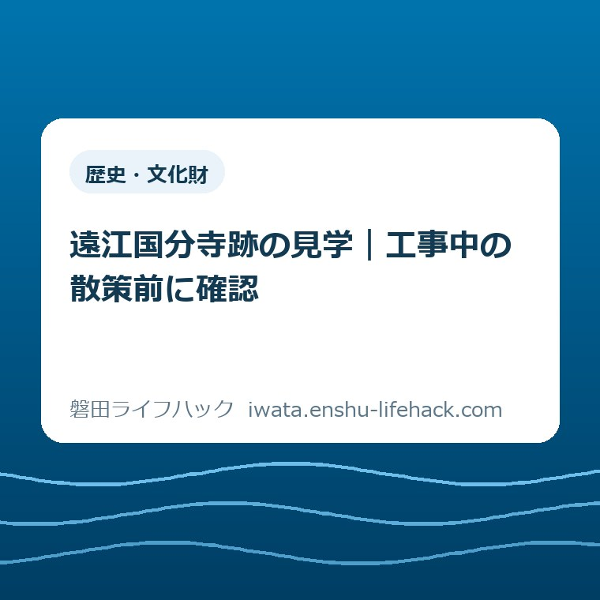

歴史・文化財
遠江国分寺跡の見学｜工事中の散策前に確認

この記事の要点
Q. 工事中だけど、子どもや親と遠江国分寺跡を見に行ける？
A. 遠江国分寺跡は2026年度も再整備中で、公園の一部に利用制限があります。復元された塔基壇と奈良時代の礎石が見どころですが、当日の通行範囲は断定できません。平日8時30分〜17時は工事の作業予定時間で、見学時間ではありません。出発前に磐田市の工事案内を確認してください。
家族の予定を合わせた外出を、空振りにしないために
遠江国分寺跡を子どもや親と訪ねる日は、見学先を決めるだけでは済みません。食事の時刻をずらし、歩ける距離を考え、帰宅後の用事も調整する。準備を引き受ける家族は、出発前から時間と気力を使っています。「工事中」と知って迷うのは、歴史への関心が薄いからではありません。
利用できる場所や歩きやすさは、工事の進み方と同行する人の条件で変わります。本記事は2026年9月30日に磐田市の公表情報を確認して書いています。当日の入口、通行可能な範囲、車いすで通れる経路まで、この記事だけで保証することはできません。
大石浩之（磐田市／不動産業）です。私は、家族の外出を考えるとき、見どころの数より「帰り道まで無理なく組めるか」を先に置きたいと考えます。今回は歴史の年表を網羅せず、基壇を見る面白さと工事中の確認事項に絞ります。現地を訪ねた体験談ではなく、公式情報をもとにした私の判断です。
遠江国分寺跡を散歩の途中に加える場合も、通常の道順がそのまま使えるとは考えないでください。歩く計画そのものは、磐田市ウォーキングマップのコース選びで整理しています。史跡への寄り道は、工事情報を見たあとに足す順番がよいと私は考えます。
公式情報：2026年度も工事が続き、公園の一部に利用制限
磐田市「遠江国分寺跡整備工事の様子」は、2026年8月6日更新のページで、令和8年度も再整備を実施すると案内しています。工事期間中は公園の一部を利用できなくなり、大型車両の出入りや作業音への注意を求めています。工事現場に近づかないよう、明記されています。
同ページの作業時間は、平日の午前8時30分から午後5時までの予定です。これは重機などを使う作業の予定であり、史跡の開場時間を示したものではありません。「午後5時になれば柵の内側も歩ける」と読み替える根拠はありません。
公園の「一部」が使えないという説明から、全域が閉鎖されているとも、塔基壇まで必ず歩けるとも言い切れません。訪問日に何を見られるかは、市の案内と現地の規制で確かめる必要があります。完成済みの部分があることと、その日そこへ行けることを分けて読むのが出発点です。
工事ページには年度別の記録が並んでいます。下へ読むと、過去の工事完了や、その当時の次年度計画も出てきます。家族で画面を共有するときは、ページ上部の2026年度の案内を先に見てください。以前の「完成」という記述だけを抜き出すと、再整備全体が終わったように受け取られるおそれがあります。
磐田市「遠江国分寺跡」は、1952年に国の特別史跡に指定されたことを説明しています。史跡の成り立ちを知るページと、工事の進み方を知るページは役割が違います。歴史紹介を読んだあとも、出発判断には工事案内を開く、という使い分けが必要です。
基壇と礎石を見る：建物がなくても、土台から想像できる
基壇とは、塔や金堂などの建物を建てる土台です。磐田市の史跡紹介は、遠江国分寺跡で木装基壇が確認されたと説明しています。「木装」は土台の周囲を木で装うことを表す言葉として捉えると、建物そのものの復元と混同しにくくなります。
市の工事案内によると、2024年度に整備した塔・回廊南西部の木装基壇は完成しています。塔では遺構を保護したうえで、実物大の基壇を復元しました。奈良時代の礎石は保存処理をして露出展示されています。見たいのは「新しく造った土台」と「残された古い石」の関係です。
意外なのは、塔基壇の高さです。市は、奈良時代の礎石を見せるため、ほかの基壇より低く整備したと説明しています。本来はもっと高かったと考えられています。実物大という言葉だけで、目の前の高さまですべて当時と同じだと受け取らないほうが、展示の工夫が伝わります。
私は子どもと話すなら、「昔の建物はどこに立っていたと思う」と一つだけ問いを置く方法を勧めます。すべての名称を覚える必要はありません。基壇は建物のための土台、礎石は柱を支える石。この二つを分けるだけでも、ただの広場として眺めるのとは違う見方になります。

図の色分けは説明のためのものです。現地で同じ色の目印が付いているという意味ではありません。家族に画面を見せる場合も、「何が復元で、何が古い資料なのかを読む図」と伝えてください。見学前の理解を助けるために、実際の配置を描くことは避けました。
石を近くで見たい気持ちがあっても、触れる、乗る、規制線の内側へ入ることは別の行為です。露出展示という説明は、接触の許可を意味しません。現地の表示で認められた位置から見る、という線を家族で共有しておくと、到着してから説明をやり直す負担が減ります。
史跡の地面に残る情報に興味を持ったら、兜塚古墳出土資料の記事も読み物になります。こちらは別の文化財の話です。同じ日に両方を巡る提案ではなく、家に帰ってから「何が残り、何がわかるのか」を考える材料として挙げています。
良い点：古いものを守りながら、見える形にしている
遠江国分寺跡の再整備で私が良いと考えるのは、保存と見学をつなぐ工夫です。地下の遺構を守るだけなら、地上からは規模を想像しにくいままです。復元された基壇があることで、建物がなくなった場所にも、見る手がかりが生まれます。
礎石を保存処理して見せる方法にも意味があります。史跡の価値を「昔は大きな寺があった」という説明だけに預けず、残された物を通じて考えられるからです。家族の間で歴史の知識に差があっても、一つの石を前に「何を支えたのか」と話すきっかけを持てます。
私は、案内を読む側にとって、年度ごとの工事記録が公開されていることも評価します。完成写真だけでは見えない整備の途中を知る材料になるからです。工事をする人、文化財を守る人、周辺で暮らす人の手間があって、見学できる場所が維持されます。
ただし、工事の記録を学ぶことと、工事現場を見に近づくことは別です。過去の見学会の写真が掲載されていても、自由に同じ位置へ立てるという案内ではありません。写真は整備を知る資料として読み、現在の規制を越える理由にはしない。この区別が、公開された資料を役立てる前提です。
注文したい点：見どころと「今日の通り道」をつなぐ案内
遠江国分寺跡の案内に私が注文したいのは、同行者の条件と照合できる情報です。「公園の一部が利用できない」だけでは、短い距離しか歩けない親と行く家族が、自分たちの経路を決めるには足りません。情報を探す役の負担を、もう一段軽くできる余地があると考えます。
例えば、訪問する時点の入口と利用できない区域、見学できる位置までの経路が一緒にわかると助かります。これは、現状でそのような案内が一切ないと断じる話ではありません。今回確認した二つの公式ページからは、2026年9月30日の通行範囲を確定できない、という限界です。
車いすやベビーカーを使う場合は、「通れる」と「家族が押して往復できる」の間にも差があります。段差だけでなく、路面の状態や迂回があるかで必要な力は変わります。歩行補助が必要な家族を連れて行くなら、入口から見たい場所までを一続きの経路として尋ねたいところです。
私は、質問の答えがはっきりしないまま、家族全員を乗せて出発することには迷いがあります。一方、工事中という一語だけで史跡を知る機会を全部あきらめるのも惜しい。だから「必ず行く」か「行かない」かを先に決めず、見たい物へ無理なく近づけるかを判断材料にします。
同行者に合わせて、聞く内容を具体的にする
遠江国分寺跡への問い合わせは、同行者の条件を添えると目的が伝わります。単に「見学できますか」と聞くより、「子どもと塔基壇を見たい。訪問予定日に使える入口と、近づいてよい範囲を知りたい」と伝えるほうが、必要な答えを絞れます。
歩く距離を抑えたい親と行く場合は、長く歩けないことを最初に伝えてください。「入口から見学できる位置まで、迂回は必要か」と尋ねる形です。移動の条件を伝えるのに、家族の詳しい病歴を説明する必要はありません。外出のために必要な条件へ話を絞れます。
車で向かう家族には、駐車できる場所からの移動も残ります。今回の資料確認では、訪問日に使える駐車場所やトイレの利用状況まで裏取りしていません。地図上で近いという理由だけで、駐車後すぐに見学できるとは判断しないでください。必要なら工事の影響と合わせて確かめます。
問い合わせ先を探すときは、市の工事案内の下部にある「情報発信元」を使えます。連絡先を検索結果の断片から拾い直すより、工事の記事と一緒に見るほうが話の対象を揃えやすくなります。連絡先欄の所在地と、史跡の訪問先は同じとは限りません。案内する相手の住所を目的地にしないよう注意してください。
家族の会話では、確認する人を一人に決めても、判断まで一人に任せる必要はありません。「見たい物」「歩行の条件」「見られなかった場合」の三つだけ共有すれば、調べた人が全員分の希望を推測しなくて済みます。資料を増やすより、希望の食い違いを出発前に減らす工夫です。
現地では、予定表より規制表示を優先する
工事中の遠江国分寺跡では、到着した場所の規制表示と案内を優先してください。出発前に公式ページを読んでいても、現地の状況が想定と違えば、予定していた歩き方を変える必要があります。インターネットの記述は、その場の規制を解除する根拠にはなりません。
大型車両が通る場所では、写真を撮るために立ち止まる位置にも気を配りたいところです。工事車両をよけながら全員で画面をのぞくより、通行の妨げにならない場所へ移ってから次の行動を相談する。見学する側ができる配慮は、難しい知識より、このような動き方にあります。
子どもが先へ走りたくなる場合は、「工事の中は入らない」と出発前にも伝え、現地では表示を一緒に見る方法があります。「今日はあの石が見られたら十分」と目的を小さくしておくと、行けない場所があっても外出全体を失敗扱いせずに済みます。これは私の提案であり、市が定めた見学コースではありません。
引き返す判断には、家族の疲れも含めて構いません。せっかく来たのだからと迂回を増やすと、帰宅後の用事や介助まで押してしまうことがあります。見学の達成度を、歩いた距離や撮った写真の数で測らない。土台と石の違いを一つ知るだけでも、出かけた意味は残ります。

対案・結論：今日は、市の工事案内を一つ開く
遠江国分寺跡へ行く前に今日できる一歩は、磐田市「遠江国分寺跡整備工事の様子」を開くことです。まず2026年度の案内を読み、家族が見たいものへ行けるか判断できる情報があるかを確かめてください。細かな持ち物を増やす前に、訪問の前提を揃えます。
工事案内だけで自分たちの経路を判断できなければ、条件を添えて市に確認するか、訪問を別の日へ回す選択になります。確認すること自体を家族の義務として増やしたいわけではありません。一つのページを見ても判断できないとわかったなら、それも外出を組み直すための収穫です。
工事中に無理に現地へ行かなくても、公式の史跡紹介で基壇の意味を先に知る方法はあります。地域で文化財を学ぶ別の方法を考えたい場合は、磐田市の文化財出前講座の相談準備も参考になります。ただし、個人の散策をそのまま置き換えるサービスとして紹介するものではありません。
私なら、家族への連絡は「塔基壇を見たい。ただし工事中なので、通れる範囲を確認してから決める」と書きます。「見学できるらしい」とだけ伝えるより、何が未確定かを残せます。出発を取りやめる可能性を先に含めておけば、当日の変更を誰かの準備不足のせいにせずに済みます。
大石の視点：引き返す手間まで、案内の中に入れたい
遠江国分寺跡の見学について、私はこう考えます。史跡の価値を伝える案内は、家族が引き返す手間まで考えてこそ役に立つ。立派な復元があっても、使える入口がわからず親を長く歩かせるなら、案内は暮らしの側まで届いていません。見どころの説明と、今日の移動のしやすさをつなげたいのです。
不動産の仕事に関わる者としても、土地や建物の説明を、その場所の広さだけで終えない姿勢を大切にしたいと考えています。誰が、どこから入り、どう戻るか。文化財の専門的な評価を私が代わりにするのではなく、公式の説明を家族の段取りに置き換えるのが、この記事の役割です。
見学の価値は、全部を一度で見ることにはありません。奈良時代の石が残り、それを見せるために復元の高さを工夫している。その関係を知るだけで、次に史跡を見る目は変わります。工事の進行や利用条件は変わるため、最後は磐田市の公式ページと現地の案内で確認してください。
よくある質問
工事中でも遠江国分寺跡を見学できますか？
磐田市は2026年度も再整備を実施し、工事期間中は公園の一部を利用できなくなると案内しています。全域閉鎖とは書かれていませんが、訪問日に塔基壇まで通れるかは本記事では確定できません。出発前に市の工事案内を確認し、経路が不明なら市へ問い合わせてください。現地の規制表示を優先します。
復元された基壇では何を見ればよいですか？
基壇は建物を建てる土台で、礎石は柱を支える石です。塔では実物大の基壇を復元し、保存処理した奈良時代の礎石を露出展示しています。古い石を見せるために高さを調整している点も見どころです。見学可能な範囲から、復元された部分と残された資料の関係を見てください。触れたり乗ったりする許可とは別です。
土日や17時以降なら、自由に歩けますか？
平日8時30分〜17時という市の記載は工事の作業予定時間です。見学時間や、規制が解除される時刻を示しているわけではありません。土日や作業時間外でも工事区域に入れるとは判断できません。曜日だけで予定を決めず、市の案内と現地の表示を確認し、工事現場には近づかないでください。
参考にした公式情報
- 遠江国分寺跡整備工事の様子／磐田市（2026年8月6日更新・2026年9月30日確認）
- 遠江国分寺跡／磐田市（2025年4月15日更新・2026年9月30日確認）
最終確認日：2026-09-30 ／ 本記事は公表情報と執筆者の見解を分けて記載しています。制度・数値・公開状況は変更される場合があるため、最新情報は磐田市公式ページでご確認ください。